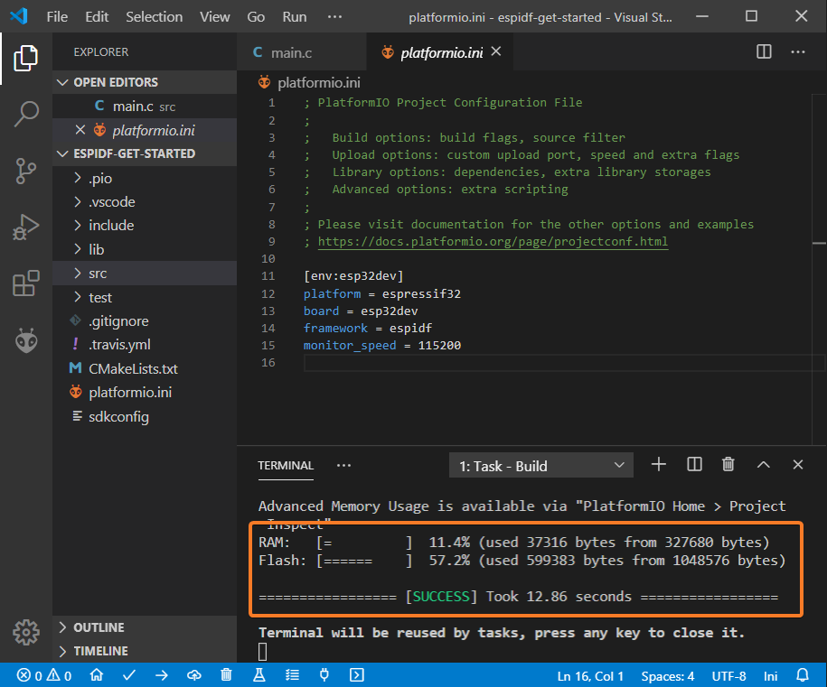

Lab 1. Introduction to the ESP-IDF development environment
ESP-IDF (Espressif IoT Development Framework) is the official development environment from Espressif for ESP32 and ESP32-S SoCs. It allows to develop efficient firmwares for said boards using the WiFi and Bluetooth communication interfaces, as well how to manage multiple characteristics of the SoCs that we will be covering in future practices.
ESP-IDF uses FreeRTOS as RTOS for the construction of the firmware, although it adds a multitude of components to offer support for higher level interaction with communication protocols, both low and high level, most of them in the field of the Internet of Things.
This lab assignment is intended to be a basic introduction to setting up running the ESP-IDF development environment on a Linux operating system, offering two basic alternatives: command line and a specific plugin for VSCode (PlatformIO). In addition, we will see in a superficial way the basic structure of a simple program developed using ESP-IDF, as well as examples basic for the start-up of the WiFi interface on an ESP32 board.
Work flow. Commnad line toolset
Installation of prerequisites
ESP-IDF requires certain software packages installed on the system in order to develop the codes and download them onto the ESP32. Below we show the requirements and installation process for Ubuntu/Debian based machines (like the virtual machine used for this course), although the ESP-IDF documentation includes instructions for other distributions and operating systems, including Windows and MacOS.
In your virtual machine, install the necessary packages using (like Super user):
sudo apt install git wget flex bison gperf python python3-pip python-setuptools cmake ninja-build ccache libffi-dev libssl-dev dfu-util
In addition, it is necessary for the user to belong to the dialout group (you
can edit the /etc/group file by adding your user to the line that indicates
the corresponding group, and starting again your session). Alternativelly you
can use the adduser command.
Check the version of python that your system is using:
python --version
If it is not a version 3 but a version 2, you should install python3 on your system and make it the default python. In modern debian based distros python3 is already de default and you can install the python-is-python3 package to have a symbolic link called python pointing to python3.
sudo apt install python-is-python3
Obtaining ESP-IDF
We will use the versions of ESP-IDF obtained directly from the official Github repository. For it, run from your home directory:
mkdir -p ~/esp
cd ~/esp
git clone --recursive https://github.com/espressif/esp-idf.git
cd esp-idf
git submodule update --init --recursive
Installation of additional tools
From the esp-idf directory, run the install.sh script to install
the tools (toolchain) specific to your version:
sh install.sh
Environment preparation
After the start of each session, you will need to set correct values for certain
environment variables. Fortunately a script is provided (export.sh)
which will allow you to set them automatically:
. export.sh
You can add this line to any login file so you don't have I run the command every time (for instance to your $HOME/.bashrc).
In any case, at this point you should have access to a program called
idf.py, that will be used to manage the workflow. Check it out.
Project preparation
In this first part, we will use a simple code example. The goal is not to analyze in detail the the structure of that code (at least not for now), but to use it to illustrate the typical workflow in an ESP-IDF project.
Remember
After executing the export.sh script, you will have an environment
variable defined named IDF_PATH. Check its value and check that it points,
effectively, to the IDF installation directory. We will use it at from now
on to refer to it.
To get started, take the hello_world example provided as part of the
installation IDF basic, and copy it to any directory on the filesystem:
cp -R $IDF_PATH/examples/get-started/hello_world $HOME/
cd $HOME/hello_world
Build
The basic build process uses the idf.py script:
idf.py build
If everything went well, the object files will have been generated and stored in
the build directory, and the binaries will be ready to be flashed on the
ESP32.
Flash
Connect the ESP32 using the microUSB cable, and if you are working in a virtual machine, you have to make it visible to the hosted OS (for example, in VirtualBox, through the menu Devices->USB->Silicon Labs USB to UART Bridge Controller).
In any case, the output of the dmesg command after connecting the device
will provide you with information about the PORT that you should use in the
flash process and subsequent monitoring.
The basic flash process uses the idf.py script:
idf.py -p flash PORT
Monitoring
If everything went well, the monitoring process will allow you to observe the
output of the program that is running on the board. For this we use again the
idf.py script:
idf.py -p PORT monitor
Note
Check that, you can indeed carry out the compilation process, flash and
monitoring the program on the ESP32 board. Remember that the EN button,
right next to the microUSB connector, will force a resetting it.
Work flow. PlatformIO and vscode IDE
The above workflow can also be developed from other development environments. In our case, the main steps are shown below for ESP-IDF integration with VSCode, using PlatformIO. The virtual machines provided in the course already have the latest version of PlatformIO and ESP-IDF installed, so we refer the reader to the official PlatformIO documentation to perform such installation on other operating systems.
Setting up a project
The easiest way to create a new project is to press the button PlatformIO Home located at the bottom of the screen:

Next, click on New Project and select as development board ESP DevkitC or Espressif ESP32 Dev Module. Select ESP-IDF as a development framework for the project:

Adding files to a project
Create a new main.c file in thesrc directory of your project, or modify the
one that already exists using, for example, the following code:
#include <string.h>
#include "freertos/FreeRTOS.h"
#include "freertos/task.h"
#include "esp_system.h"
#include "esp_wifi.h"
#include "esp_event.h"
#include "esp_log.h"
#include "nvs_flash.h"
#include "lwip/err.h"
#include "lwip/sys.h"
#define EXAMPLE_ESP_WIFI_SSID "mywifissid"
#define EXAMPLE_ESP_WIFI_PASS "mywifipass"
#define EXAMPLE_MAX_STA_CONN (3)
static const char *TAG = "wifi softAP";
static void wifi_event_handler(void* arg, esp_event_base_t event_base,
int32_t event_id, void* event_data)
{
if (event_id == WIFI_EVENT_AP_STACONNECTED) {
wifi_event_ap_staconnected_t* event = (wifi_event_ap_staconnected_t*) event_data;
ESP_LOGI(TAG, "station "MACSTR" join, AID=%d",
MAC2STR(event->mac), event->aid);
} else if (event_id == WIFI_EVENT_AP_STADISCONNECTED) {
wifi_event_ap_stadisconnected_t* event = (wifi_event_ap_stadisconnected_t*) event_data;
ESP_LOGI(TAG, "station "MACSTR" leave, AID=%d",
MAC2STR(event->mac), event->aid);
}
}
void wifi_init_softap()
{
tcpip_adapter_init();
ESP_ERROR_CHECK(esp_event_loop_create_default());
wifi_init_config_t cfg = WIFI_INIT_CONFIG_DEFAULT();
ESP_ERROR_CHECK(esp_wifi_init(&cfg));
ESP_ERROR_CHECK(esp_event_handler_register(WIFI_EVENT, ESP_EVENT_ANY_ID, &wifi_event_handler, NULL));
wifi_config_t wifi_config = {
.ap = {
.ssid = EXAMPLE_ESP_WIFI_SSID,
.ssid_len = strlen(EXAMPLE_ESP_WIFI_SSID),
.password = EXAMPLE_ESP_WIFI_PASS,
.max_connection = EXAMPLE_MAX_STA_CONN,
.authmode = WIFI_AUTH_WPA_WPA2_PSK
},
};
if (strlen(EXAMPLE_ESP_WIFI_PASS) == 0) {
wifi_config.ap.authmode = WIFI_AUTH_OPEN;
}
ESP_ERROR_CHECK(esp_wifi_set_mode(WIFI_MODE_AP));
ESP_ERROR_CHECK(esp_wifi_set_config(ESP_IF_WIFI_AP, &wifi_config));
ESP_ERROR_CHECK(esp_wifi_start());
ESP_LOGI(TAG, "wifi_init_softap finished. SSID:%s password:%s",
EXAMPLE_ESP_WIFI_SSID, EXAMPLE_ESP_WIFI_PASS);
}
void app_main()
{
//Initialize NVS
esp_err_t ret = nvs_flash_init();
if (ret == ESP_ERR_NVS_NO_FREE_PAGES || ret == ESP_ERR_NVS_NEW_VERSION_FOUND) {
ESP_ERROR_CHECK(nvs_flash_erase());
ret = nvs_flash_init();
}
ESP_ERROR_CHECK(ret);
ESP_LOGI(TAG, "ESP_WIFI_MODE_AP");
wifi_init_softap();
}
We will not analyze for the moment the operation of the code (we will do that later), it basically it establishes a wireless Access Point open to connections authenticated via WPA2.
Project Build
To build the project, display the Command Palette (menu View->Command Palette)
and run the PlatformIO: Build command from it. You can also press the Build
button (in the form of check) in the bottom bar of PlatformIO:

If all went well, you should see a final message similar to the following in the system terminal:

Project flashing
To upload the project to the board, we can use the command PlatformIO: Upload
through the command palette, or press the corresponding button on the bottom bar
(with a symbol left arrow):

Project monitoring
Finally, we can monitor the project using the command PlatformIO: Monitor
from the command palette or through the bottom bar, using the button with
a plug as a symbol:

Analysis of a simple project (Hello world) in ESP-IDF
Note
The following tasks can be performed from the command line or by using PlatformIO. We nevertheless suggest you to use the lower level command line toolset to become familiar with it.
Look at the general structure of the hello_world directory that you compiled
previously. Specifically, we will be interested in inspecting the basic
structure of a main program for ESP-IDF, in this case hello_world_main.c.
#include <stdio.h>
#include "sdkconfig.h"
#include "freertos/FreeRTOS.h"
#include "freertos/task.h"
#include "esp_system.h"
#include "esp_spi_flash.h"
void app_main(void)
{
printf("Hello world!\n");
/* Print chip information */
esp_chip_info_t chip_info;
esp_chip_info(&chip_info);
printf("This is %s chip with %d CPU cores, WiFi%s%s, ",
CONFIG_IDF_TARGET,
chip_info.cores,
(chip_info.features & CHIP_FEATURE_BT) ? "/BT" : "",
(chip_info.features & CHIP_FEATURE_BLE) ? "/BLE" : "");
printf("silicon revision %d, ", chip_info.revision);
printf("%dMB %s flash\n", spi_flash_get_chip_size() / (1024 * 1024),
(chip_info.features & CHIP_FEATURE_EMB_FLASH) ? "embedded" : "external");
printf("Minimum free heap size: %d bytes\n", esp_get_minimum_free_heap_size());
for (int i = 10; i >= 0; i--) {
printf("Restarting in %d seconds...\n", i);
vTaskDelay(1000 / portTICK_PERIOD_MS);
}
printf("Restarting now.\n");
fflush(stdout);
esp_restart();
}
At a high level, the app_main function is the entry point to every program
developed using ESP-IDF. More specifically, after the
system load,
the so called main task runs the code provided by the user and implemented in
the app_main function. Both the amount of its stack and its priority can be
configured by the developer through the ESP-IDF configuration system (as we will
see later). Typically this function is used to carry out initial configuration
tasks or to create and launch other tasks. Anyhow, as in this case, any
functionality can be implemented inside the app_main function.
In this example, some generic information about the SoC that is running the firmware is shown in first place:
/* Print chip information */
esp_chip_info_t chip_info;
esp_chip_info(&chip_info);
printf("This is %s chip with %d CPU cores, WiFi%s%s, ",
CONFIG_IDF_TARGET,
chip_info.cores,
(chip_info.features & CHIP_FEATURE_BT) ? "/BT" : "",
(chip_info.features & CHIP_FEATURE_BLE) ? "/BLE" : "");
printf("silicon revision %d, ", chip_info.revision);
printf("%dMB %s flash\n", spi_flash_get_chip_size() / (1024 * 1024),
(chip_info.features & CHIP_FEATURE_EMB_FLASH) ? "embedded" : "external");
printf("Minimum free heap size: %d bytes\n", esp_get_minimum_free_heap_size());
Then, within a simple loop, the system displays a message and defers the
execution of the task for a specified period of time using the
vTaskDelay function from FreeRTOS. This
function receives the number of clock ticks you want to delay. The example
uses the constant portTIC_PERIOD_MS to compute the number of ticks for 1000
ms:
for (int i = 10; i >= 0; i--) {
printf("Restarting in %d seconds...\n", i);
vTaskDelay(1000 / portTICK_PERIOD_MS);
}
Finally, the task reboots the system after the completion of the main task:
printf("Restarting now.\n");
fflush(stdout);
esp_restart();
Task 1.1
Modify the suspension period of the task so that it is larger or smaller, and check that this effectively modifies the behavior of the loaded firmware. Modify the program so that it is also showd on the screen wether the SoC has WiFi capabilities and includes FLASH memory (you can refer to the following page).
Task creation
The previous project can be redesigned to create an additiona task to execute the logic of the program instead of having the main FreeRTOS task executing it. To do this, we need to briefly introduce the basic FreeRTOS API for task management.
The xTaskCreate function (included intask.h) creates a new task:
BaseType_t xTaskCreate( TaskFunction_t pvTaskCode,
const char * const pcName,
configSTACK_DEPTH_TYPE usStackDepth,
void *pvParameters,
UBaseType_t uxPriority,
TaskHandle_t *pxCreatedTask
);
Specifically, it creates a new task and adds it to the list of ready to run tasks, receiving as parameters:
pvTaskCode: a pointer to the input function for the task. Tasks are usually implemented as an infinite loop, and should not return or end abruptly. A task can be externally destroyed via its handler (last parameter in the creation), or internally (from the task code itself), as as shown in the following example taken directly from the FreeRTOS documentation:
void vATaskFunction( void *pvParameters )
{
for( ;; )
{
-- Task application code here. --
}
/* Tasks must not attempt to return from their implementing
function or otherwise exit. In newer FreeRTOS port
attempting to do so will result in an configASSERT() being
called if it is defined. If it is necessary for a task to
exit then have the task call vTaskDelete( NULL ) to ensure
its exit is clean. */
vTaskDelete( NULL );
}
-
pcName: Descriptive name (in string form) of the task to be executed, helpfull for debugging purposes. -
usStackDepth: size in words of the stack for the task. -
pvParameters: parameters to the entry function of the task. -
uxPriority: priority assigned to the task. -
pxCreatedTask: optional handle for the task.
Thus, the functionality of the Hello, world program that we analyzed above
could be restructured using a single task:
void hello_task(void *pvParameter)
{
printf("Hello world!\n");
for (int i = 10; i >= 0; i--) {
printf("Restarting in %d seconds...\n", i);
vTaskDelay(1000 / portTICK_RATE_MS);
}
printf("Restarting now.\n");
fflush(stdout);
esp_restart();
}
And the task could be created from the main task:
void app_main()
{
nvs_flash_init();
xTaskCreate( &hello_task, "hello_task", 2048, NULL, 5, NULL );
}
Task 1.2
Implement a modification of the hello_world program that uses two
independent tasks with different functionality (in this case it is
enough to only show a different messaga on the screen) and different
suspension times. Check that, indeed, both tasks are run concurrently.
Project customization
ESP-IDF uses the kconfiglib library to provide a system of Simple and
extensible compile-time project setup. To illustrate its operation, we will
use the blink example, that can be found in the ESP-IDF distribution that you
cloned earlier (copy the example to any point in your directory hierarchy before
you begin).
To configure the ESP-IDF project, simply use the following command:
idf.py menuconfig
Executing the above command will allow you to browse a set of general options, which will allow you to configure the characteristics specific to the project (for example, selecting the components that you want to enable in its build).
Task
Navigate through the options that appear in the setup menus to familiarize yourself with them. You will use them in future practices.
In the blink project, notice that one of the menu options,
called Example configuration, includes an option called Blink GPIO number.
Beyond its functionality (it defines the number of GPIO pin to enable/disable),
it is of interest to us that this configuration option will define at compile
time the value of a constant (a C preprocessor macro, in this case
CONFIG_BLINK_GPIO) that can be used in any file of our project.
Note
Observe how the CONFIG_BLINK_GPIO constant is used in the code of the
blink project.
This configuration option is not part of the default options of ESP-IDF, but has
been added by the developers of the blink project. Observe and study the
format and content of the file main/Kconfig.projbuild, provided as part of the
project. It defines the characteristics (name, range, default value and
description) of the new configuration option.
Task 1.3
Modify the hello_world project so that it defines two configuration
options, that will allow to specify the wait time for each of the two tasks
that you have defined in your previous solution (Task 1.2). Make use of them
in your code and verify that indeed its modification through the menu
system allows a customization of the behavior of your codes.
Management of WiFi networks. Example 1. WiFi network scanning
As an example, and in preparation for the codes with which we will work in future lab assignments, we are going to analyze a concrete example of a firmware that scans the available wireless networks within the reach of the ESP32 node, and reports them through the serial port (we will seem them printed on the screen if we monitor the node). It will report their main characteristics for each of the networks detected.
Task 1.4
Copy the example located in the directory examples/wifi/scan to other
directory from your home folder. Before compiling it, change the maximum
number of networks to scan through in the example setup menu to 20. Create a
WiFi access point with your smartphone. Compile the code, flash it and
monitor the output, and verify that your network is correctly scanned.
Observe its operation. Actually, the firmware just scans a subset of the available networks, reporting some of their characteristics (for example, SSID, Authentication Mode, or Primary Channel).
Task 1.5
Analyze the code for the wifi_scan function (main task). Specifically,
focus on the lines that enable and configure scanning of
networks. Try to understand the general operation of the program, consulting
and pointing out the role of each line, with special interest to those
functions prefixed with esp_wifi_ *. Write down in a text file
the role of each of them, consulting the official documentation.
Management of WiFi networks. Example 2. Network event management
In this second example you will create a firmware that connects the ESP32 as a station to an existing access point. This example will allow you to observe, broadly speaking, the event management system in FreeRTOS/ESP-IDF, that we use to respond to the network events such as obtaining an IP address or successfully connect to an access point.
Task
Copy the station example located in the directory
examples/wifi/getting_started to another folder in your home directory.
Before compiling it, modify the SSID of the network to which it will try to
connect, as well as the chosen password through the system setup menus (you
can use the same access point you created before with your smartphone).
Observe its operation. The firmware just initializes the device in station mode (as opposed to the Access Point mode), making a connection to the preconfigured access point through the setup menu.
Analyze the code for the wifi_init_sta function. This function, which
implements the main task, is basically divided into two parts:
-
Event management. Observe the mechanism by which the reception of an event is associated with the execution of a specific handler function previously registered.
-
Configuration of the connection to an access point. The connection configuration is made through the corresponding fields of a
wifi_config_tstructure. Look at the basic fields you need, how the use of WPA2 is enforced and how it collects connection data (SSID and password) through the configuration system. Observe also how the wireless communication system is initialized by theesp_wifi_start()call.
Task 1.6
Modify the firmware so that it can use a different handler for the event of acquiring an IP address and the rest of the events of the WiFi system that are already being handled. Check that, the output associated with said event continues to be observed, even when both functions are different.